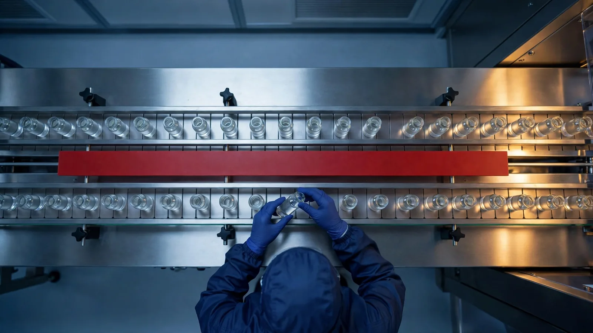

Many deviation SOPs allow a departure that is known in advance to be raised either as a planned deviation or through change control, and the two routes produce very different records. This guide explains the difference between planned and unplanned deviation in pharma, works through planned and unplanned deviation examples, and shows why European guidance sends a departure that is known in advance to change control rather than to the deviation route.
Planned and unplanned deviations in pharma: what the two terms mean
An unplanned deviation is a departure from an approved instruction, process or standard that nobody intended. It is discovered during the work or afterwards, at review. GMP requires it to be recorded and investigated. EU GMP Chapter 1 asks that significant deviations are fully recorded and investigated with the objective of determining the root cause, and that appropriate corrective and preventive action is implemented. In the United States, 21 CFR 211.100(b) says that any deviation from written production and process control procedures shall be recorded and justified.
The usual planned deviation definition is a departure that is known, assessed and approved before it happens, usually for a fixed period or a fixed number of batches. Sites use the term for one-off situations: a spare piece of equipment, a different approved lot, a maintenance window.
If a departure from defined processes is agreed in advance, then it would be more appropriate to document it through a change control process.
Types of deviation in pharma
Most lists of deviation types mix two different questions. The first is how the departure arose: planned or unplanned. The second is how serious it is: critical, major or minor. This guide is about the first question, and it argues that planned departures belong in change control, so that the deviation system is used only for unplanned events. The critical, major and minor classification then applies to those.
Some SOPs also keep a lower tier, often called an incident, for events assessed as having no GMP impact. If yours does, the SOP should say who makes that call and on what evidence, and what happens if an impact is found later.
Unplanned deviation examples
In each of these examples, the deviation is discovered during or after the work:
- A granulator stops during a processing step and the batch is held.
- A storage temperature excursion is identified when the data logger is reviewed.
- An entry in the batch manufacturing record is missing or wrong, and the reviewer spots it.
- A cleaning step is done with the wrong detergent concentration.
- A sample is tested on an instrument whose calibration had lapsed.
Every unplanned deviation then follows the same path: immediate action to contain it, a record, an impact assessment, a decision on how serious it is, an investigation proportionate to that classification, and corrective and preventive action where the investigation calls for it.
Planned deviation examples
These are the situations sites usually mean when they use the term:
- Using a second qualified piece of equipment while the usual one is under maintenance.
- Using material from an alternative approved supplier during a shortage.
- Running one batch in a different qualified room or on a different line.
- Extending a hold time once, for a single batch, with supporting data.
- Using a revised form for a few days before the updated SOP becomes effective.
In each of these examples, the departure is decided in advance, for a limited time, based on an assessment. One caution applies to the material and supplier examples: if the alternative is not covered by the marketing authorisation, the site cannot decide the matter on its own, and a variation to the authorisation may be needed.
Why EU guidance treats a planned “deviation” as a change
EU GMP already describes the requirements for a departure that is decided in advance. Chapter 1 asks the pharmaceutical quality system to have arrangements for the prospective evaluation of planned changes and their approval before implementation, taking account of regulatory notification and approval where required. For example, the temporary use of a second qualified pump while the usual pump is under maintenance falls within that description.
The term “planned deviation” was never defined in the GMP Guide. According to the ECA Academy, it first appeared in an official document in a 2009 update of the EMEA reflection paper on dealing with minor deviations, which excluded planned deviations and left them to the quality system; the concept went with the 2015 revision of Annex 16.
The current EMA questions and answers on Annex 16 are more direct. They say a deviation can be considered “unexpected” until the time of discovery, and that planned deviations are outside the scope of paragraph 3.1. Annex 16 section 3 is the provision under which a Qualified Person may consider certifying a batch affected by an unexpected deviation, provided the registered specifications are met and the impact has been assessed through quality risk management. In practice, a QP cannot use that route for a departure the site chose beforehand. For more on the QP’s side of this, see what takes a Qualified Person’s time at batch release.
The US rule in 21 CFR 211.100(b) speaks of deviations from written procedures and has no separate planned category. MHRA guidance for UK manufacturers is read alongside the EU GMP texts and UK medicines legislation, so the same reasoning is likely to apply to a UK site and its QP.
The ECA Academy notes that many companies now call the route “temporary change” or “short-term change”. Whatever the route is called, the same controls should apply.
Choosing the route
Deviation or temporary change?
Planned deviation vs change control: what a temporary change needs
The main difference between planned deviation and temporary change control is the route. A temporary change is a change with a defined end date. It should go through change control in the same way as any other change, and it should include a reversal plan.
| A planned deviation form often holds | A temporary change should hold |
|---|---|
| When raised: shortly before the work | Raised before the work, with time for the assessment |
| Scope: one event, described in free text | The batches, equipment, documents and dates affected |
| Impact assessment: a QA review | An assessment across the areas affected: quality, validation, regulatory, training |
| Regulatory check: often absent | Whether the marketing authorisation or a licence is affected |
| End point: often absent | An end date or a batch count |
| Return: often absent | A reversal plan and a check that the approved state is restored |
| Training: rarely | People trained on the temporary instruction before it starts |
| After the end: a short summary | An evaluation of the outcome and a decision on a permanent change |
The last row follows Chapter 1 as well, which asks for an evaluation after any change is implemented to confirm that the quality objectives were met and that there was no unintended harmful effect on product quality.
The open letter that launched Inglasia Intuitor describes change control from the perspective of a new user: the training needed before raising one, the impact assessment, the risk assessment and the levels of review. A temporary change should go through every one of those steps.
When an unplanned deviation stops being unexpected
Once a deviation has occurred, a repeat of it can no longer be treated as unexpected. The EMA questions and answers on Annex 16 say that, following discovery, repeated deviations from the manufacturing process or analytical control methods should be considered changes, and that variations to the affected marketing authorisations must be submitted. In exceptional cases, to avoid disruption to supply, QP certification may continue while corrective and preventive action is in progress.
If the same deviation is raised repeatedly, it indicates that the process does not match its instructions, and it needs a root cause investigation, a CAPA and, often, a change. Trending is important because the repeat may occur in another batch, line or site, where a single deviation owner would not see it.
What to write in the SOP, and what a system should keep apart
A deviation SOP that separates the two routes should usually state the following:
- A deviation is unplanned. Any departure known in advance goes to change control as a temporary change.
- If the site keeps the term “planned deviation”, it should carry the same controls as a temporary change: approval before the work, a defined scope and end, a reversal plan and a regulatory check.
- QA should approve the change, and no work should start before approval.
- Every temporary change closes with a check that the approved state is back, or with a permanent change.
- Both routes should be trended. Repeated temporary changes for the same reason indicate a process that needs a permanent fix, and repeated unplanned deviations indicate the need for a CAPA.
In Inglasia Intuitor™, the two routes are managed in separate modules. Deviations has step-based guided forms and recurrence intelligence across sites. In Change Control, temporary changes carry mandatory reversal plans, and the multi-area impact assessment ends at a hard documentation gate at effectiveness. Read more about the Deviations and Change Control modules.
Frequently asked questions
What is the difference between a planned and an unplanned deviation?
An unplanned deviation is a departure from an approved procedure, process or specification that nobody intended; it is found during or after the work and is recorded, assessed and investigated. A planned deviation is a departure that is known, assessed and approved before it happens, usually for a fixed period or a fixed number of batches.
Is a planned deviation allowed under EU GMP?
The term “planned deviation” was never defined in the EU GMP Guide. The EMA questions and answers on Annex 16 place planned deviations outside the scope of paragraph 3.1, and EU GMP Chapter 1 expects planned changes to be evaluated and approved before implementation. For that reason many sites now handle a planned departure as a temporary change under change control.
What does a temporary change need before the work starts?
Approval before the work starts, a defined scope (batches, equipment, documents and dates), an impact assessment across quality, validation, regulatory and training, a check on whether the marketing authorisation or a licence is affected, an end date or batch count, a reversal plan, and training on the temporary instruction.
When does a repeated deviation become a change?
Once a deviation has occurred, a repeat of it can no longer be treated as unexpected. According to the EMA questions and answers on Annex 16, repeated deviations from the manufacturing process or analytical control methods should be considered changes, and variations to the affected marketing authorisations must be submitted.
The short version
Departures that are discovered should be recorded and investigated as deviations. Departures that are decided in advance should be approved beforehand through change control and reversed at the end of the agreed period. Keeping the two routes separate allows inspectors and the QP to understand a site’s records clearly.
More posts for Quality teams are on the blogs page.
If you would like a free demonstration of the system, please contact us using the below link.
Contact — Inglasia Intuitor™